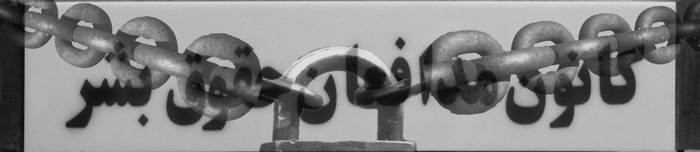

|
|
اطلاعیه کانون مدافعان حقوق بشر درباره پلمپ دفتراین کانون (شماره 1 و 2)
يكشنبه1 دی 1387
در شصتمین سالگرد تصویب اعلامیه جهانی حقوق بشر

اطلاعیه شماره یک
روابط عمومی کانون مدافعان حقوق بشر: دفتر کانون مدافعان حقوق بشر مستقر در خیابان یوسف آباد تهران روز یکشنبه اول دی ماه 1387 توسط نیروهای انتظامی و امنیتی بدون ارائه حکم قضایی پلمپ شد.
این دفتر با قسمتی از جایزه صلح نوبل که در سال 2003 به شیرین عبادی تعلق گرفته بود، خریداری شده و در اختیار کانون قرار گرفته بود. در این دفتر علاوه بر کانون مدافعان حقوق بشر، نهاد مردمی دیگری به نام «کانون مشارکت برای پاکسازی مین» که آن نیز توسط شیرین عبادی و گروهی از همفکران وی تأسیس شده بود، اداره می شد. در حقیقت با پلمپ غیرقانونی دفتر کانون مدافعان حقوق بشر، محل کار دو نهاد مردمی تعطیل شد. ریاست این نهاد مردمی شیرین عبادی برنده جایزه صلح نوبل بر عهده دارد.
قرار بود روز یکشنبه به مناسبت شصتمین سالگرد تصویب اعلامیه جهانی حقوق بشر، در دفتر کانون مدافعان حقوق بشر مراسم جشنی برگزار شود. این برنامه به مسئول مربوط در نیروی انتظامی منطقه یوسف آباد تهران جهت حفظ امنیت مراسم و طبق معمول قبلا اطلاع داده شده بود.
کانون مدافعان حقوق بشر از سال 1379 شروع به کار کرد و درخواست خود را به کمیسیون ماده ده احزاب تقدیم کرده بود که حتی مسئولان وقت ( علی جنتی، معاون سیاسی وزارت کشور ) صحه بر قانونی بودن این نهاد مردمی گذاشته و اعلام عمومی در روزنامه ها شده بود.
کانون مدافعان حقوق بشر به ثبت جهانی نیز رسیده و عضو رسمی فدراسیون بین المللی جوامع حقوق بشر است که 190 کشور جهان عضو آن هستند.
کانون مدافعان حقوق بشر طبق اساسنامه خود سه وظیفه اصلی بر عهده دارد، «دفاع رایگان از متهمان عقیدتی و سیاسی»، «حمایت از خانواده های زندانیان سیاسی و عقیدتی» و «گزارش دهی منظم و مستمر در موارد نقض حقوق بشر در ایران». از آنجایی که در دو سال اخیر به هیچ یک از گزارشگران ویژه حقوق بشر سازمان ملل متحد جهت ورود به ایران ویزا داده نشده بود، بسیاری از سازمان های بین المللی به گزارش های این کانون استناد می کردند، از جمله بان کی مون، دبیر کل سازمان ملل متحد در گزارشی که به مجمع عمومی سازمان ملل متحد در دسامبر 2008 ارائه کرد و منجر به صدور قطعنامه علیه دولت جمهوری اسلامی ایران شد نیز به گزارش کانون مدافعان حقوق بشر استناد شده بود.
به نظر می رسد مجموعه فعالیت های حقوق بشری این نهاد مردمی باعث برخورد غیرقانونی روز یکشنبه اول دی ماه 1387 شده است.
برنامه جشن کانون مدافعان حقوق بشر قرار بود با سخنرانی تعدادی از فعالان سیاسی، اجتماعی و فرهنگی برگزار شود و راه اندازی سایت کانون و اعلام فعالیت آن و همچنین جایزه تلاشگر حقوق بشر به تقی رحمانی انجام شود که یک ساعت و نیم قبل از شروع برنامه نیروهای انتظامی و لباس شخصی ممانعت به عمل آوردند.
گفتنی است در حین اقدام نیروهای انتظامی در پلمپ دفتر کانون مدافعان حقوق بشر که بدون ارائه حکم قضایی انجام می شد، تعدادی از افراد لباس شخصی با دوربین های عکاسی و فیلمبرداری از داخل ماشین های پارک شده در خیابان یوسف آباد و داخل ساختمان های مقابل و همچنین دفتر کانون مدافعان حقوق بشر تصویربرداری می کردند. این در حالی بود که نیروهای انتظامی و لباس شخصی ها از انجام وظیفه قانونی خبرنگاران که برای پوشش خبر و گزارش به محل دفتر این کانون اعزام شده بودند، ممانعت به عمل آورده به گونه ای که دوربین عکاسان خبرنگار حاضر در محل توسط نیروهای لباس بدون ارائه کارت شناسایی ضبط شد. هرچند در این محل نیروهای انتظامی نیز حضور داشتند.
عدم ارائه حکم قانونی و قضایی به مسئولان کانون مدافعان حقوق بشر با اعتراض آنان مواجه شد. این اعتراض با برخورد توهین آمیز برخی از نیروهای مسئول در محل همراه شد که برخورد فیزیکی هم وجود داشت
به دنبال پلمپ دفتر کانون مدافعان حقوق بشر در تهران روابط عمومی این کانون اطلاعیه شماره 2 خود را صادر کرد. متن کامل این اطلاعیه به شرح زیر است:
اطلاعیه شماره 2 روابط عمومی کانون مدافعان حقوق بشر
با توجه به اینکه دفتر کانون مدافعان حقوق بشر در تهران بصورت غیر قانونی و بدون صورت برداری پلمپ شده است بنابراین قبلاٌ اعلام می داریم، چنانچه در آینده هر سندی یا مدرکی که عنوان شود از دفتر کانون مدافعان حقوق بشر بدست آمده است و آن را در راستای اعمال فشار بر اعضای کانون مدافعان حقوق بشر بخواهند مورد استفاده قرار دهند از درجه اعتبار ساقط بوده و نشانه ای دیگر از رفتارهای فراقانونی مأمورانی است که به دفتر کانون مدافعان حقوق بشر مراجعه کرده اند.
روابط عمومی کانون مدافعان حقوق بشر